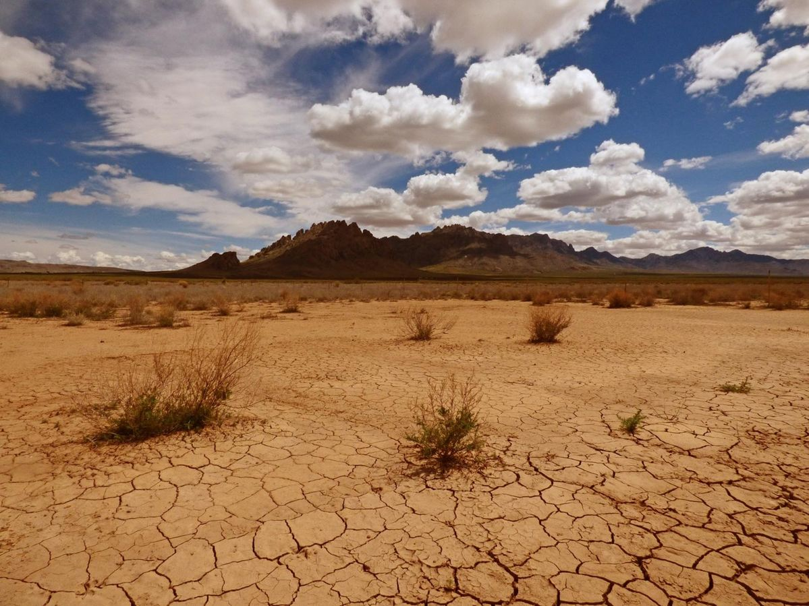
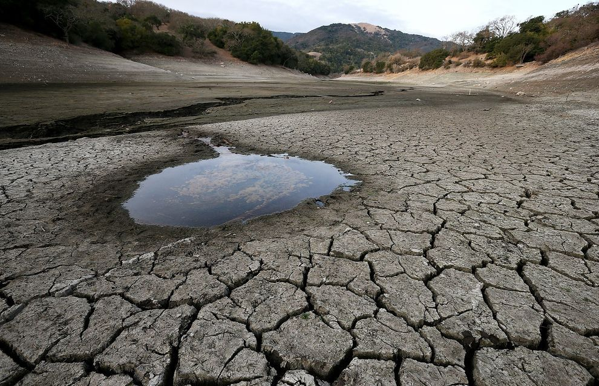
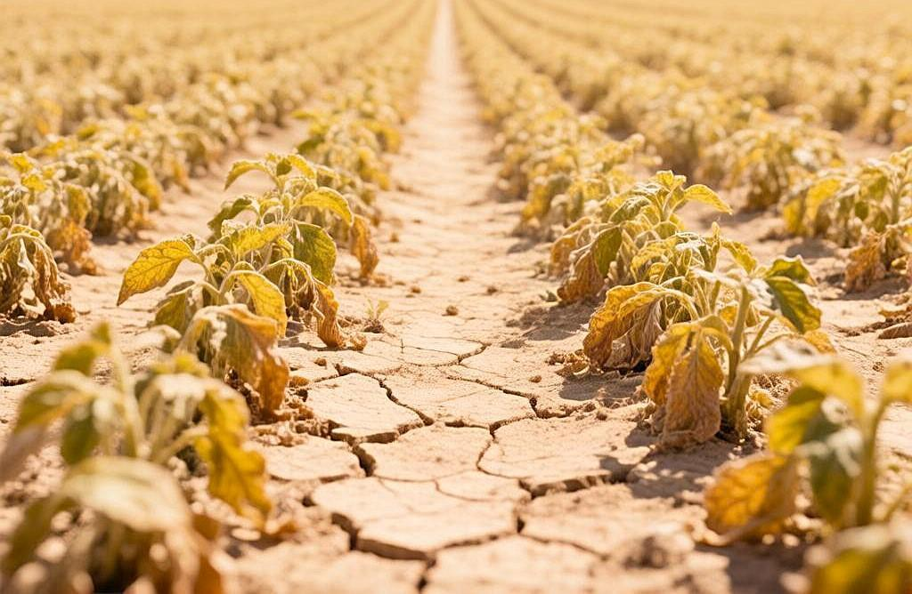
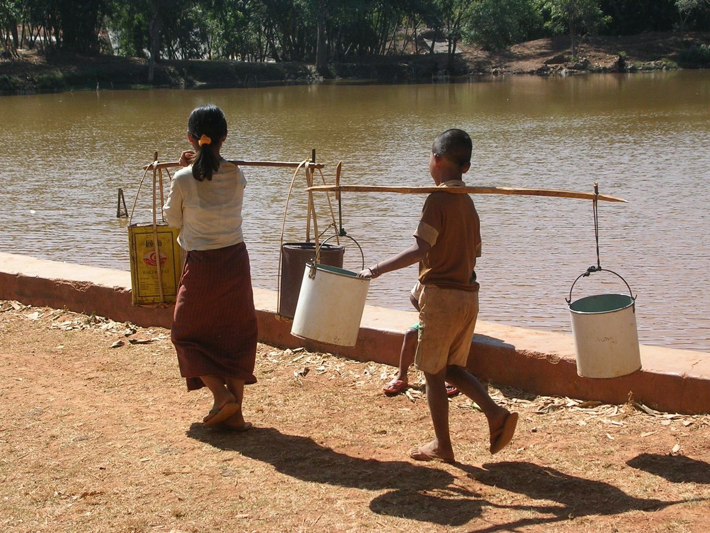
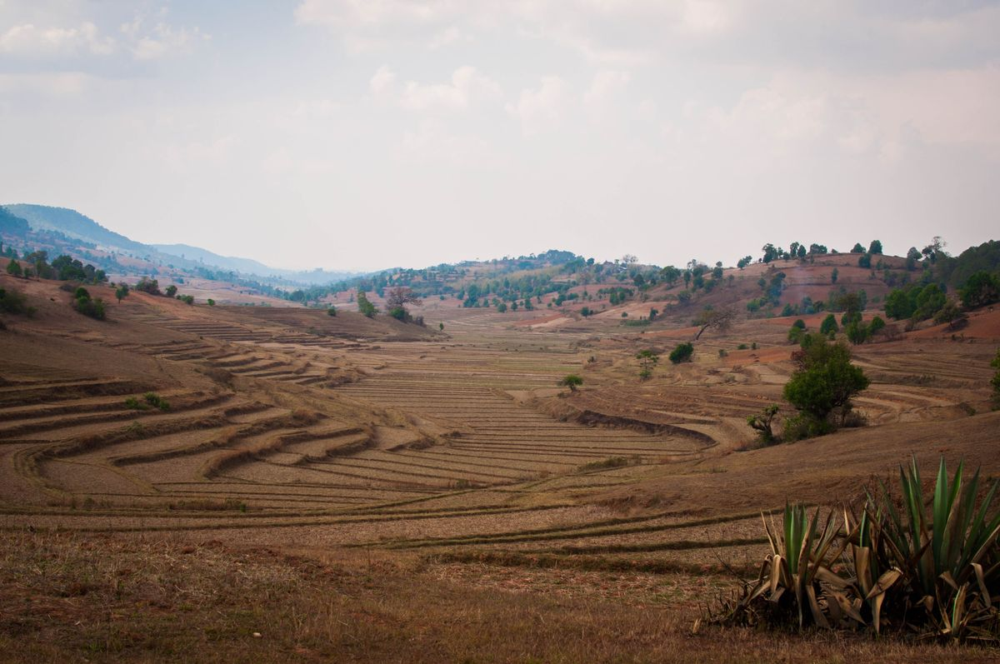

Understanding Drought
and Water Shortages
Drought and water shortages can affect farming, household water supplies and everyday life. HYDRIX helps visitors understand these challenges, explore their effects in Myanmar and learn practical ways to prepare before shortages become serious.
EXPLORE THE TOPICSExplore Water Challenges
Learn about drought, water availability, agriculture and practical ways to conserve water.

01 / FEATURED TOPICDrought
Understand the causes, different types and effects of drought on the environment and communities.

Water Shortages
Explore limited water supplies and community challenges.

Farming
Learn how dry conditions affect crops and rural livelihoods.

Water Conservation
Discover useful ways to reduce unnecessary water waste.

Myanmar's Central Dry Zone
Myanmar's Central Dry Zone includes parts of Mandalay, Magway and lower Sagaing. The region generally receives less rainfall than many other parts of the country and experiences long dry periods outside the monsoon season.
Many rural communities depend on agriculture and seasonal water supplies. When rainfall is insufficient or local water sources become unreliable, families may experience difficulties with farming, drinking water and household needs.
Understanding the region's conditions helps explain why water conservation, reliable storage and early preparedness are important for local communities.
EXPLORE THE DRY ZONEOne Drought. Different Impacts.
Choose an area to see how prolonged dry conditions can affect everyday life.
Water Sources Under Pressure
When rainfall remains low, rivers, reservoirs and wells may replenish more slowly. Communities can face growing pressure on everyday water supplies.
How to Prepare for Water Shortages
Preparing for drought does not always require expensive equipment. Understanding water needs, preventing waste and making practical arrangements early can help households and communities manage limited supplies.
Check Water Supplies
Identify available water sources, check for leaks and stay informed about local water conditions.
Reduce Water Waste
Use water carefully, maintain taps and pipes, and avoid unnecessary consumption.
Prepare a Simple Plan
Identify essential household needs and prepare clean, safe storage where possible.